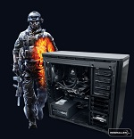

Datorpaket 1
| Manufacturer | Webhallen | Webhallen |
| Processor | Intel Haswell-baserade Core i7-4770K | Intel |
| Grafikort | GeForce GTX 760 | |
| Moderkort | Asus z87-moderkort | |
| Internminne | G.Skill 16GB |
Med 1600 MHz minne på hela 16GB från G.Skill och en 120GB SSD från Kingston har du minne och lagringsprestanda som heter duga.
Corsair H70 vattenkylningssystem ser till att CPUn hålls sval och ljudnivån på en rimlig nivå och för lagring har vi en 7200 RPMs hårddisk från Seagate på 2 Terrabyte.
Datorn kommer med Windows 8 förinstallerat och för att göra övergången till det nya operativsystemet enklare skickar vi med en licens till Start8. Detta program gör att du kan anpassa Windows 8 att efterlikna Windows 7 samtidigt som du behåller alla fördelar och förbättringar i den nya versionen.
Utökad specifikation:
• Intel Core i7-4770K - 8 trådar / 3,5GHz (3,9GHz Turbo) / 8MB / Socket 1150 (Boxed) (84w) (Upplåst)
• ASUS GeForce GTX 760 2GB DirectCU II OC (GTX760-DC2OC-2GD5)
• G.Skill Ares 16GB DDR3 PC-12800 1600MHz (F3-1600C9D-16GAR) (2x8GB)
• Kingston 120GB SSDNow Series SATA III 2.5" (SV300S37A/120G)
• Seagate Intern Hårddisk Barracuda 2TB (64MB / 7200RPM) (ST2000DM001)
• ASUS Z87-A - ATX / Z87
• Corsair Hydro H70
• Corsair PowerSupply (PSU) CX 750M 750W
• ASUS DVD±RW (DRW-24B5ST/BLK/B/AS) 24X SATA Bulk Svart
• Corsair Obsidian 550D Webhallen Edition - Svart (Ej PSU)
• Microsoft Windows 8 64-bit OEM Svensk
Pris: 15999kr
Datorn levereras färdigbyggd, installerad och med tre års garanti.
Datorpaket 2
| Manufacturer | Webhallen | Webhallen | |
| Processor | Intel Haswell-baserade Core i5-4770K | Intel | |
| Grafikort | GeForce GTX 660 | ||
| Moderkort | Asus z87-moderkort | ||
| Internminne | G.Skill 8GB |
Med 1600 MHz minne på hela 16GB från G.Skill och en 120GB SSD från Kingston har du minne och lagringsprestanda som heter duga.
Corsair H70 vattenkylningssystem ser till att CPUn hålls sval och ljudnivån på en rimlig nivå och för lagring har vi en 7200 RPMs hårddisk från Seagate på 2 Terrabyte.
Datorn kommer med Windows 8 förinstallerat och för att göra övergången till det nya operativsystemet enklare skickar vi med en licens till Start8. Detta program gör att du kan anpassa Windows 8 att efterlikna Windows 7 samtidigt som du behåller alla fördelar och förbättringar i den nya versionen.
Utökad specifikation:
• Intel Core i7-4770K - 8 trådar / 3,5GHz (3,9GHz Turbo) / 8MB / Socket 1150 (Boxed) (84w) (Upplåst)
• ASUS GeForce GTX 760 2GB DirectCU II OC (GTX760-DC2OC-2GD5)
• G.Skill Ares 16GB DDR3 PC-12800 1600MHz (F3-1600C9D-16GAR) (2x8GB)
• Kingston 120GB SSDNow Series SATA III 2.5" (SV300S37A/120G)
• Seagate Intern Hårddisk Barracuda 2TB (64MB / 7200RPM) (ST2000DM001)
• ASUS Z87-A - ATX / Z87
• Corsair Hydro H70
• Corsair PowerSupply (PSU) CX 750M 750W
• ASUS DVD±RW (DRW-24B5ST/BLK/B/AS) 24X SATA Bulk Svart
• Corsair Obsidian 550D Webhallen Edition - Svart (Ej PSU)
• Microsoft Windows 8 64-bit OEM Svensk
Pris: 9999kr Datorn levereras färdigbyggd, installerad och med tre års garanti.